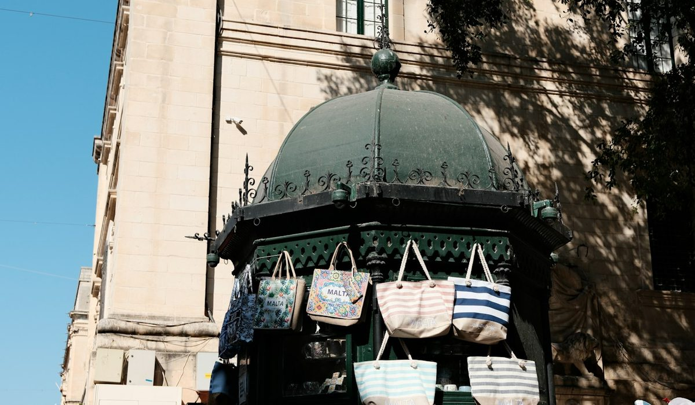
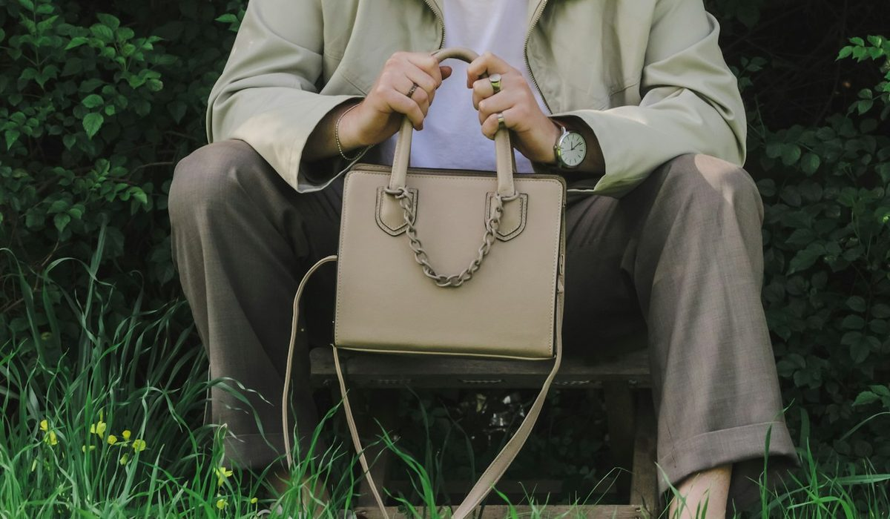

En bref
Le meilleur sac cabas en toile est le Cabas M zippé en toile et sequins de Vanessa Bruno, noté 8,7/10 (relevé de démonstration), en toile de coton fabriquée en France, de 130 € en XS à 195 € en L. Longchamp suit à 8,3/10 avec Le Pliage Original, plus léger et moins cher, 125 € en M et 135 € en L. Sézane complète le podium à 7,9/10 sur le style.
- Le Cabas en toile de Vanessa Bruno existe en 4 tailles de toile, de 130 € en XS zippé à 195 € en L zippé
- Le Pliage Original de Longchamp coûte 125 € en M et 135 € en L, soit 55 € de moins que le Cabas M zippé à 180 €
- Longchamp gagne les critères Prix et Légèreté, Vanessa Bruno la tenue de la toile, la gamme et l'origine
- Une partie des toiles de Vanessa Bruno est certifiée Oeko-Tex, le Pliage Original est en polyamide recyclée
Sommaire de ce comparatif
Nos critères et leur poids
La toile pardonne presque tout. Le café renversé, la pluie de novembre, le sac jeté sur la banquette arrière. Ce qu'elle pardonne moins, ce sont les anses mal cousues et une trame trop lâche qui se déforme au troisième litre de lait. Nous avons noté les huit modèles sur cinq critères, pondérés selon l'usage réel d'un cabas en toile.
| Critère | Poids | Ce que nous regardons |
|---|---|---|
| Tenue de la toile et finitions | 25 % | La densité de la trame, les coutures des anses, la tenue de la forme chargée puis vidée |
| Polyvalence et tailles | 25 % | Le nombre de tailles, la fermeture, le passage du bureau au marché |
| Prix | 20 % | Le prix catalogue de la taille M ou de son équivalent |
| Légèreté et praticité | 15 % | Le poids à vide, le pliage, l'entretien au quotidien |
| Origine et matière | 15 % | Le lieu de fabrication affiché, la composition, les certifications textiles |
Total 100 %. La note globale est la moyenne pondérée des sous-notes, arrondie au dixième.
Un cabas en toile se porte cinq jours sur sept. La tenue de la toile et la polyvalence comptent donc pour moitié. Le prix et le poids, où les écarts sont nets, pèsent ensemble 35 %.
Le classement des 8 meilleurs cabas en toile
Vanessa Bruno et Longchamp se partagent les critères. L'une gagne la toile, la gamme et l'origine, l'autre gagne le prix et la légèreté. La note globale tranche de quatre dixièmes.
01 La meilleure toileToile de coton Made in France, de 130 € à 195 €8,7/10
La meilleure toileToile de coton Made in France, de 130 € à 195 €8,7/10
La meilleure toileToile de coton Made in France, de 130 € à 195 €8,7/1002 Le plus léger et le moins cherLe Pliage Original M à 125 €8,3/10
Le plus léger et le moins cherLe Pliage Original M à 125 €8,3/10
Le plus léger et le moins cherLe Pliage Original M à 125 €8,3/1003 Le styleToile de coton, autour de 135 €7,9/10
Le styleToile de coton, autour de 135 €7,9/10
Le styleToile de coton, autour de 135 €7,9/10Le Cabas M zippé en toile et sequins prend la tête parce que sa toile 100 % coton, fabriquée en France, tient sa forme mieux que les autres modèles du panel, et parce qu'il existe du XS au L en toile. Le Pliage Original de Longchamp reste imbattable sur deux points, le prix et le poids, et il se replie à plat dans un tiroir. Sézane complète le podium avec des cabas en toile très portés à Paris, sur un site que nous n'avons pas pu consulter le jour du relevé.
| Modèle | Toile (25 %) | Polyvalence (25 %) | Prix (20 %) | Légèreté (15 %) | Origine (15 %) | Note |
|---|---|---|---|---|---|---|
| Vanessa Bruno, Cabas M zippé | 9,1 | 9,4 | 7,8 | 7,4 | 9,2 | 8,7 |
| Longchamp, Le Pliage Original | 7,8 | 8,0 | 9,6 | 9,6 | 6,8 | 8,3 |
| Sézane, cabas en toile | 8,0 | 7,6 | 8,2 | 8,0 | 7,6 | 7,9 |
| A.P.C., Tote Ninon | 7,6 | 7,2 | 7,6 | 8,0 | 7,8 | 7,6 |
Vanessa Bruno perd les critères Prix et Légèreté face à Longchamp.
Le tableau comparatif des 8 cabas en toile
Chaque ligne donne le modèle en taille M ou dans son seul format. Le poids est un ordre de grandeur à vide, la pochette amovible retirée.
| Marque et modèle | Note /10 | Prix | Matière | Poids à vide estimé | Le point fort |
|---|---|---|---|---|---|
| Vanessa Bruno, Cabas M zippé en toile et sequinsNotre choix | 8,7 | 180 € | Toile 100 % coton à sequins, Made in France | Autour de 380 g | La toile et la gamme |
| Longchamp, Le Pliage Original cabas M | 8,3 | 125 € | Polyamide recyclée, garniture cuir | Autour de 190 g | Le prix et le poids |
| Sézane, cabas en toile | 7,9 | Autour de 135 € | Toile de coton | Autour de 340 g | Le style parisien |
| A.P.C., Tote Ninon | 7,6 | 260 € | Matériaux recyclés, doublure coton | Autour de 460 g | La sobriété |
| Le Tanneur, grand cabas en raphia et cuir | 7,3 | 390 € | Raphia naturel, cuir lisse végétal | Autour de 640 g | La fibre naturelle |
| Gérard Darel, 24H en toile enduite | 7,2 | 295 € | Toile enduite monogrammée | Autour de 710 g | La toile qui résiste à la pluie |
| Lancaster, cabas en toile | 7,0 | Autour de 165 € | Toile et cuir | Autour de 430 g | Le prix d'entrée |
| Maje, Milpli cabas en toile et cuir | 6,9 | 375 € | Toile et cuir | Autour de 590 g | Le mélange des matières |
Prix catalogue en euros TTC relevés sur les sites officiels, taille M ou équivalente, hors ventes Archives. Les prix de Sézane et de Lancaster sont indicatifs, leurs collections de toile changent à chaque saison. Poids à vide estimés hors pochette. Notes et prix, relevé de démonstration du 12 octobre 2026.
Un écart frappe d'abord. Le Pliage Original pèse environ deux fois moins que le Cabas M zippé, dont les sequins cousus ajoutent du poids à la toile. En contrepartie, la toile de coton tient debout quand le sac est posé, là où le nylon s'affaisse. Le choix se fait donc entre un sac qui disparaît dans une valise et un sac qui garde sa silhouette sur une chaise de bureau.

Coton, nylon, lin, quelle toile pour quel usage
La toile de coton est la plus polyvalente. Celle du Cabas de Vanessa Bruno est 100 % coton, fabriquée en France, avec des sequins cousus et une étiquette intérieure « Le Cabas Vanessa Bruno Made in France ». Une partie des toiles est certifiée Oeko-Tex. C'est le modèle d'origine, dessiné en 1998 comme un grand sac à provisions pour le marché.
Le nylon joue la légèreté. Le Pliage Original de Longchamp est taillé dans une toile de polyamide recyclée, avec une garniture en cuir de Russie. Il sèche vite, se plie en quatre et part en voyage sans prendre de place. Sa toile marque davantage les objets anguleux, un ordinateur se devine à travers.
Je le prends pour le marché le samedi et je le garde pour le bureau le lundi. La toile a pris un peu de patine, rien d'autre. (une lectrice, 38 ans, Nantes)
Le lin apporte de la tenue et un grain plus sec. Vanessa Bruno le propose en cinq tailles, de 160 € en XS à 260 € en XL, fabriqué en France sur une partie des coloris, et personnalisable en ligne avec des lettres ou des motifs. Côté toile enduite, le 24H de Gérard Darel en toile monogrammée à 295 € résiste mieux à la pluie. Le Milpli de Maje associe toile et cuir à 375 €, et le Tote Ninon d'A.P.C. mise sur des matériaux recyclés à 260 €, 190 € en Small.
Prix et poids, les deux critères que Longchamp remporte
Sur le prix, Longchamp gagne, et nettement. Le Pliage Original coûte 125 € en M et 135 € en L, quand le Cabas M zippé en toile coûte 180 € et le L zippé 195 €. Le Cabas M ouvert, sans fermeture, descend à 160 €. Il reste 35 € plus cher que le Pliage.
La gamme de Vanessa Bruno compense en partie. Le XS zippé coûte 130 €, le S zippé 140 €, et les versions saisonnières montent en gamme, 185 € pour le S en toile léopard à finitions sequins, 245 € pour le L, 225 € et 275 € pour le cabas à paillettes en S et en L.

Deux réserves pour le cabas à sequins. Il n'a pas de compartiment ordinateur dédié, une pochette à part fait l'affaire. Et ses sequins demandent un rangement à plat, pas un crochet de porte-manteau. Le Pliage, lui, se range roulé dans n'importe quel tiroir.
Quel cabas en toile choisir selon votre profil
Si vous voulez un cabas en toile pour tous les jours
Prenez le Cabas M zippé en toile et sequins de Vanessa Bruno, à 180 €. La fermeture protège le contenu, la toile de coton tient sa forme et les anses de 22 cm passent sur un manteau.
Si vous voyagez souvent
Prenez Le Pliage Original de Longchamp en L, à 135 €. Il pèse le poids d'un pull fin, se plie dans la valise et sert de bagage d'appoint au retour.
Si vous voulez offrir un cabas
Prenez le cabas en lin de Vanessa Bruno, personnalisable avec des initiales, à partir de 160 € en XS. Longchamp propose de son côté son service My Pliage pour personnaliser Le Pliage.
Si vous habitez une ville pluvieuse
Regardez le 24H en toile enduite de Gérard Darel, à 295 €. La toile enduite supporte mieux une averse que la toile de coton ou le lin.
Notre verdict
Le meilleur sac cabas en toile est le Cabas M zippé en toile et sequins de Vanessa Bruno, avec 8,7/10. Il gagne sur la tenue de sa toile de coton fabriquée en France, sur la gamme de tailles et sur l'origine. Il perd le prix et le poids face au Pliage Original de Longchamp, 8,3/10, qui coûte 125 € en M.
Si votre priorité est le prix ou la légèreté, prenez Le Pliage Original de Longchamp. Si vous cherchez un cabas en toile qui garde sa forme du bureau au marché, prenez le Cabas M zippé. Si le style prime, regardez du côté de Sézane, 7,9/10.
Questions fréquentes
Quel est le meilleur sac cabas en toile ?
Le Cabas M zippé en toile et sequins de Vanessa Bruno arrive premier de notre comparatif avec 8,7/10, à 180 €. Le Pliage Original de Longchamp suit avec 8,3/10 et Sézane avec 7,9/10. Le Pliage reste moins cher et plus léger, à 125 € en M.
Est-ce que Le Pliage de Longchamp est en toile ?
Le Pliage Original est en toile de polyamide recyclée, une forme de nylon, avec une garniture en cuir de Russie. Il coûte 125 € en cabas M et 135 € en cabas L. C'est le modèle le plus léger et le moins cher de notre comparatif.
Combien coûte un cabas Vanessa Bruno en toile ?
Le Cabas Vanessa Bruno en toile et sequins coûte 130 € en XS zippé, 140 € en S zippé, 160 € en M ouvert, 180 € en M zippé et 195 € en L zippé. Les versions léopard et à paillettes vont de 185 € à 275 €.
Est-ce qu'un cabas en toile tient plusieurs années ?
Oui, si la trame est dense et les anses cousues sur toute leur longueur. La toile 100 % coton du Cabas de Vanessa Bruno est fabriquée en France et garde sa forme une fois vidée. Le Pliage de Longchamp en polyamide résiste bien à l'usure, mais se déforme davantage avec des objets anguleux.
Comment laver un cabas en toile à sequins ?
Un cabas à sequins ne passe pas en machine. Nettoyez la toile localement avec une éponge humide et un savon doux, puis laissez sécher à plat, loin d'un radiateur. Rangez-le à plat pour ne pas tordre les sequins.
Comment sont notés les modèles ?
Chaque modèle est noté sur cinq critères pondérés, la tenue de la toile (25 %), la polyvalence et les tailles (25 %), le prix (20 %), la légèreté (15 %) et l'origine (15 %). Les prix viennent des sites officiels et la note globale est la moyenne pondérée des sous-notes. Notes et prix, relevé de démonstration du 12 octobre 2026.
Notre méthode
Ce classement repose sur des relevés faits sur les sites officiels et en boutique, refaits chaque mois.
- Les prix sont relevés sur les sites officiels des marques en France, hors soldes et hors code promo, à la date indiquée
- Les matières, l'origine de fabrication et les dimensions sont celles affichées sur les fiches produit
- Chaque sac est porté et rempli en conditions réelles, ordinateur, trousse, gourde et parapluie compris
- Les avis clients vérifiés sont lus un par un sur la tenue des anses, des coins et des finitions
- Les services (livraison, retours, réparation, seconde main) sont testés sur une commande réelle par marque